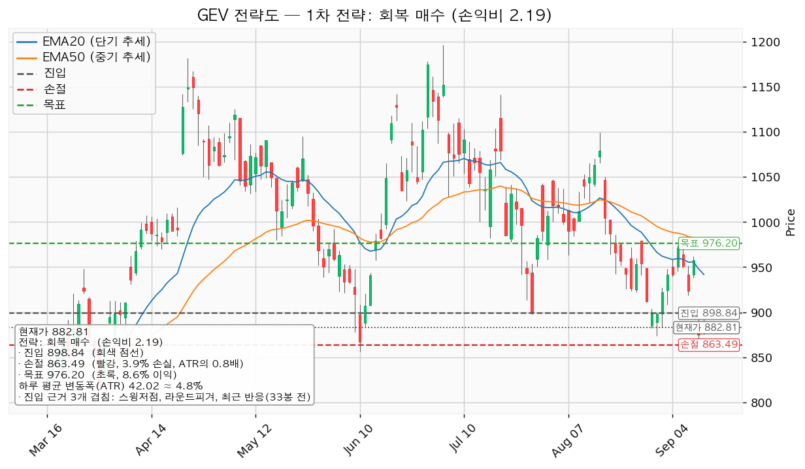
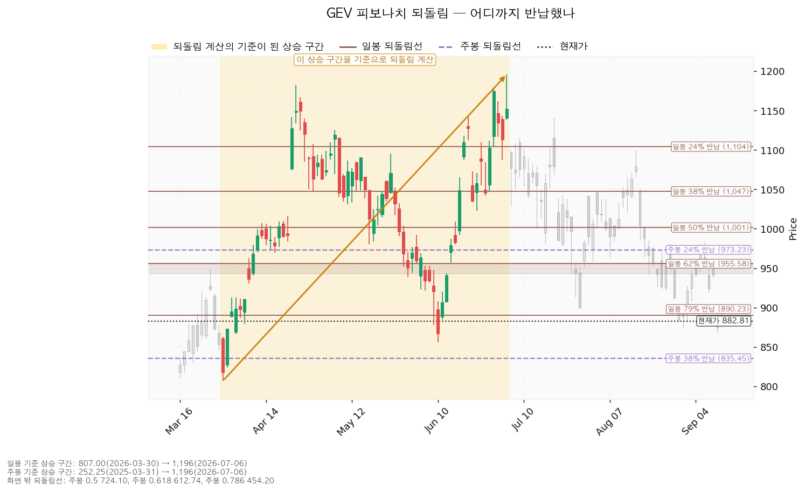
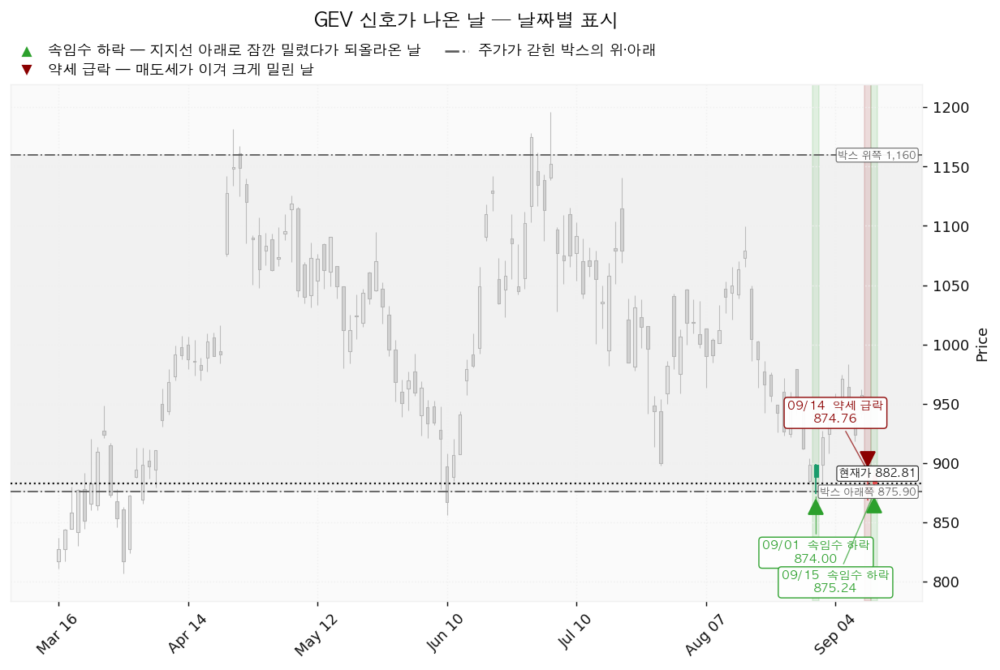
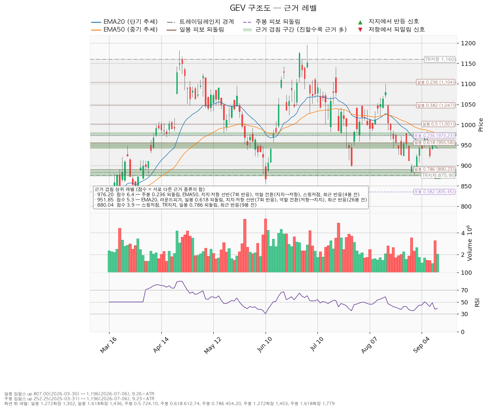

GE Vernova(GEV)는 GE에서 분리된 미국 전력 설비 회사로, 가스·풍력 발전 터빈과 송배전 전력망 장비를 만들고 유지보수 서비스를 제공합니다.
| 구분 | 가격 | 어떻게 판정하는가 | 현재 상태 | 현재가 대비 |
|---|---|---|---|---|
| 회복선 (진입 조건) | 898.84달러 | 일봉 종가로 회복한 뒤 되돌림에서 지지되는지까지 확인 | 회복 대기 | +1.82% (0.38 ATR) |
| 집행 손절 | 863.49달러 | 저가가 닿으면 청산 — 보유 1주와 신규 진입분 모두에 적용 | 보유 1주에 대해 유효 | -2.19% (0.46 ATR) |
| 관망 종료 기준 | 874.00달러 또는 2026-10-28 실적 | 일봉 종가로 874.00달러(아래쪽 겹침 구간 하단)를 잃으면 신규 진입 계획을 내림 | 유지 중 | -1.00% (0.21 ATR) |
| 확인선 (상승 확정) | 976.20달러 | 일봉 종가 돌파 후 되돌림 지지 확인 | 미돌파 | +10.58% (2.22 ATR) |
| 폐기선 (구조) | 875.90달러 | 이탈 후 3거래일 내 종가 회복 실패(또는 그 전에 833.88달러 아래 종가 마감) + 반등에서 저항으로 확인 | 유지 중 | -0.78% (0.16 ATR) |
폐기선 875.90달러와 관망 종료 기준 874.00달러가 1.90달러 차이로 거의 같은 자리에 있습니다. 직전 리포트에서는 폐기선이 현재가에서 7.08 ATR 떨어져 실무상 쓸 수 없었는데, 이번에는 0.16 ATR로 붙었습니다 — 하루치 움직임 안에서 판정이 나는 거리입니다.
확인선 976.20달러는 대표 셋업의 목표와 같은 가격입니다. 모순이 아니라 분기입니다 — 여기서 막히고 되밀리면 그게 목표였던 것이고, 일봉 종가로 넘기면 상승 확정이며 그때는 이 포지션의 연장이 아니라 새 셋업으로 다시 잡습니다. 박스 상단 1,159.64달러는 그 위의 맥락으로만 적습니다.
| 직전이 건 조건 | 판정 |
|---|---|
| 회복선 954.60달러 일봉 종가 회복 | 충족 — 2026-09-11 종가 957.27달러 (발행 당일 미국장) |
| 회복 후 되돌림에서 지지 확인 | 실패 — 2026-09-14 종가 874.76달러, 하루 만에 -8.62% |
| 확인선 977.76달러 종가 돌파 | 미충족 — 발행 후 최고가는 962.21달러(09-11) |
| 관망 종료 기준 890.23달러 종가 이탈 | 충족 — 2026-09-14 종가 874.76달러, 09-15 종가 882.81달러도 그 아래 |
| 폐기선 638.02달러 | 유지 중 |
직전 판단은 손익비 0.31을 근거로 한 패스였고, 그 판단대로 집행하지 않았습니다. 954.60달러에 진입했다면 다음 거래일 저가 868.25달러가 집행 손절 880.14달러를 하회해 -7.80%로 손절됐습니다. 패스 판정으로 이 손실은 발생하지 않았습니다.
| 항목 | 2026-09-11 | 2026-09-16 | 왜 움직였나 |
|---|---|---|---|
| 폐기선 | 638.02달러 | 875.90달러 | 판정에 쓰는 박스 창이 180일봉에서 90일봉으로 바뀌었습니다. 09-14 갭 하락으로 180일 창의 갇힘 비율(가격이 박스 안에 머문 비율)이 0.983→0.956으로 내려가 90일 창(0.967)에 역전됐고, 방향성 지표(0에 가까울수록 옆으로 누운 모양)도 90일이 0.125로 180일(0.476)보다 옆으로 누운 모양에 가깝습니다. 하단이 638.02→875.90달러로 올라왔습니다 |
| 회복선 · 진입 | 954.60달러 | 898.84달러 | 현재가가 890.23달러 아래로 내려가면서, 950.00~955.96달러(5.3점) 대신 그보다 아래의 897.68~900.00달러(2.3점 — 스윙저점 + 라운드피겨)가 첫 회복 후보가 됐습니다 |
| 집행 손절 | 880.14달러 | 863.49달러 | 근거 구간이 890.23~900.00달러에서 874.00~890.23달러로 내려갔고, 그 구간 아래에 둔 결과입니다 |
| 관망 종료 기준 | 890.23달러 | 874.00달러 | 890.23달러가 종가로 이탈됐으므로 그 아래 겹침 구간 하단으로 내려갑니다 |
| 확인선 · 목표 | 977.76달러 | 976.20달러 | 같은 구간(973.23~980.14달러)이며 50일 평균선(EMA50)이 983.92→974.76달러로 내려와 중심값만 소폭 이동했습니다 |
| 손익비 | 0.31 | 2.19 | 진입이 55.76달러 내려오면서 진입~목표 폭이 0.57 ATR에서 1.84 ATR로 늘었습니다. 목표는 거의 그대로입니다 |
| 국면 후보 | 하락 국면 | 매집(재축적) 후보 | 박스 창이 바뀌어 현재가가 하단 부근이 됐고, 그 자리에서 속임수 하락 두 번이 나왔습니다 |
| 현재가 / RSI / ATR | 923.91 / 42.4 / 40.38 | 882.81 / 39.1 / 42.02 | 사흘간 -4.45% |
직전 결론은 패스, 이번 결론은 조건 대기(898.84달러 회복 시 진입)입니다. 바뀐 원인은 진입 쪽입니다 — 목표 976.20달러는 그대로인데 진입 후보가 954.60달러에서 898.84달러로 내려와 수익 구간이 하루 평균 변동폭의 0.57배에서 1.84배로 늘었고, 손절 폭도 1.84배에서 0.84배로 줄었습니다.
정정할 것이 하나 있습니다.
보유 여부. 09-08과 09-11 리포트는 둘 다 "미진입" 전제로 작성됐습니다. 그러나 체결 장부에는 2026-07-01자 매수 1주 · 평단 1,009.58달러가 기록돼 있습니다(증권사 평단 일괄 등록분). 두 리포트가 "이 선은 집행되지 않습니다", "미진입 상태에서 실제로 볼 선은"이라고 적은 부분은 사실과 다릅니다. 이번 리포트는 1주 보유 상태를 전제로 씁니다.
| 항목 | 값 |
|---|---|
| 수량 / 평단 | 1주 / 1,009.58달러 (2026-07-01 기록) |
| 현재가 기준 평가손익 | -12.56% (-126.77달러) |
| 목표 976.20달러에서 청산할 경우 | 평단 대비 -3.31% (-33.38달러) |
| 집행 손절 863.49달러에 닿을 경우 | 평단 대비 -14.47% (-146.09달러) |
목표 976.20달러는 평단 1,009.58달러보다 아래입니다. 이 보유분은 목표에 닿아도 -3.31%의 손실로 끝납니다. 이번 계획의 범위는 손실을 863.49달러에서 끊고 구조가 회복될 때 붙는 데까지입니다. 평단 1,009.58달러 회복은 976.20달러를 종가로 넘긴 뒤 새 셋업에서 다룰 몫입니다.
| 항목 | 값 | 해석 |
|---|---|---|
| 현재가 | 882.81달러 | 20일·50일 평균선 모두 아래 |
| 20일 평균선(EMA20) / 50일 평균선(EMA50) | 941.75 / 974.76달러 | 현재가가 각각 -6.26%, -9.43% 아래 — 단기선이 중기선 아래(역배열) |
| RSI(14) | 39.1 | 최근 14일간 오른 폭과 내린 폭의 비율을 0~100으로 나타낸 값입니다. 중립(50) 아래이나 침체 구간(30)은 아님 |
| 하루 평균 변동폭(ATR) | 42.02달러 (주가의 4.76%) | 8% 기준 아래 — 손절 폭을 잡기 어려운 종목은 아닙니다 |
| 횡보 박스 | 875.90~1,159.64달러 (90일봉 기준, 조회 619일봉) | 폭이 하루 변동폭의 6.75배 |
| 박스 안쪽 판정 | 중립 | 지지 테스트마다 매도 거래량은 줄었으나, 박스 안에서 저점이 절하 중 |
| 상승봉/하락봉 거래량비 | 0.97 | 사는 쪽과 파는 쪽이 거의 같음 |
| 직전 구간 | 657.04~1,045.90달러에서 위로 올라와 이 박스로 진입 | 재축적인지 분산인지 아직 갈리지 않은 자리 |
| 신호 | 속임수 하락 2회 + 약세 급락 1회 | 아래 §신호일 |
| 국면 후보 | 매집(재축적) 후보 | 박스 하단 부근의 속임수 하락 근거. 박스 안쪽 성향은 중립이라 확정이 아닌 후보입니다 |
박스 안쪽 지지 테스트는 네 번 관측됐습니다.
| 날짜 | 저가 | 그날 거래량(평균 대비) |
|---|---|---|
| 2026-06-10 | 856.01달러 | 2.02배 |
| 2026-07-29 | 897.68달러 | 1.24배 |
| 2026-09-01 | 874.00달러 | 1.15배 |
| 2026-09-14 | 868.25달러 | 1.58배 |
테스트별 거래량의 추세는 감소로 판정됩니다. 다만 가장 최근 테스트(09-14)의 거래량이 1.58배로 직전 두 번보다 올라왔다는 점은 그대로 적어 둡니다 — 매도 압력이 단조롭게 줄어드는 그림은 아닙니다. 저점은 897.68 → 874.00 → 868.25달러로 절하 중이며, 이것이 매집 후보 판정을 확정으로 올리지 못하는 이유입니다.
898.84달러를 일봉 종가로 회복하고 되돌림에서 지켜진 뒤, 976.20달러를 종가로 넘기는 경로입니다. 구조로는 속임수 하락 확인 → 힘의 증거 → 되돌림 지지 → 상승 국면 순서입니다. 898.84달러 회복·지지 확인 후 진입하고, 976.20달러를 종가로 넘기면 그때 목표와 손절을 다시 계산해 새 셋업으로 냅니다.
875.90달러를 지키면서 976.20달러 아래에서 박스가 이어지는 경로입니다. 구조가 깨진 것이 아니라 매물을 소화하는 데 시간이 걸리는 국면이며, 부정적 신호가 아닙니다. 박스 폭이 6.75 ATR이므로 하단과 상단 사이를 오가는 데 시간이 걸리는 것이 정상입니다. 신규 진입은 898.84달러 회복 전까지 보류하고 아래 셋을 추적합니다.
| 추적 항목 | 현재 관측 |
|---|---|
| 지지 테스트마다 매도 거래량이 줄어드는지 | 전체 추세는 감소이나 가장 최근 테스트가 1.58배로 반등 |
| 저점이 절상되는지 | 절하 중 — 897.68 → 874.00 → 868.25달러 |
| 올라갈 때 거래량과 캔들 폭이 확대되는지 | 상승봉/하락봉 거래량비 0.97 — 아직 한쪽으로 기울지 않음 |
저점 절하가 절상으로 바뀌면 ①로 기웁니다. 세 항목이 그대로인 채 874.00달러를 종가로 잃으면 ③으로 기웁니다. 이 국면이 길어지면 EMA50(974.76달러)이 계속 내려오면서 976.20달러 저항대와 더 단단히 겹치고, 그러면 다음 리포트의 목표는 한 번 더 내려옵니다.
875.90달러를 이탈한 뒤 3거래일 안에 종가로 회복하지 못하거나, 그 전에 833.88달러 아래로 종가 마감하고, 이후 반등에서 875.90달러가 저항으로 확인되는 경로입니다. 이때는 매집이 아니라 재분산이었다는 뜻이고 추가 저점 갱신 가능성이 열립니다. 보유 1주를 정리하고 새 매도 절정과 새 박스가 만들어질 때까지 관망합니다.
폐기선 아래에서 다음으로 받칠 만한 가격대는 835.45~856.01달러(겹침 3.8점 — 주봉 0.382 되돌림, 라운드피겨 850, 스윙저점 856.01)입니다. 875.90달러에서 이 구간 상단까지는 19.89달러(하루 평균 변동폭의 0.47배)뿐이므로, 폐기선을 잃으면 곧바로 이 구간에서 다시 지지 여부를 확인하게 됩니다.
산출된 셋업은 회복 매수 하나입니다. 하락 추세 + 횡보 국면이므로 되돌림 저가매수는 산출되지 않으며, 개별 종목에 매도 셋업은 제시하지 않습니다. 지지 확인 매수도 나오지 않았는데, 박스 안쪽 성향이 매집 우위가 아니라 중립이기 때문입니다.
| 항목 | 값 |
|---|---|
| 이름 / 방향 | 회복 매수 · 롱 |
| 구조 증명도 | 회복 확인형 (가중치 1.0) — 저항을 종가로 되찾은 뒤에만 진입. 진입가는 불리해지지만 구조가 먼저 증명됩니다 |
| 엣지의 종류 | 모멘텀 |
| 전제 | 저항을 종가로 되찾으면 그 방향이 이어진다 |
| 성격 | 자주 틀리고 소수가 크게 맞는 유형입니다. 승률을 기대하는 셋업이 아닙니다 (이 유형의 일반적 성격이며, 이 엔진에서 측정한 값이 아닙니다) |
| 진입 | 898.84달러 (현재가 +1.82%, 하루 변동폭의 0.38배 위) |
| 손절 | 863.49달러 — 겹침 구간(874.00~890.23달러) 바로 아래 |
| 손절 폭 | 진입가 대비 -3.93%, 하루 평균 변동폭의 0.84배 |
| 목표 | 976.20달러 (진입 대비 +8.61%, 하루 변동폭의 1.84배) |
| 손익비 | 1:2.19 (손절 폭 0.84 ATR 기준) — 손절이 이미 겹침 구간 아래에 놓인 구조 손절이라 별도의 구조적 손절 기준 손익비는 산출되지 않았습니다 |
| 진입 근거 겹침 | 3개 · 2.3점 — 스윙저점(897.68), 라운드피겨(900), 최근 반응(33봉 전). 구간 897.68~900.00달러 |
| 목표 근거 겹침 | 6개 · 6.4점 — 주봉 0.236 되돌림, EMA50, 지지·저항 선반(7회 반응), 역할 전환(지지→저항), 스윙저점, 최근 반응(4봉 전). 구간 973.23~980.14달러 |
| 청산 | 목표 976.20달러에서 전량. 트레일링을 걸지 않습니다 (아래 설명) |
| 현재가 추격 | 비권장 — 저항을 종가로 회복하기 전이므로 지금 사지 않고 종가 회복을 기다립니다 |
| 이 셋업의 평가 | 손익비 1 이상이므로 집행 대상. 다만 진입 근거 겹침이 2.3점으로 얇습니다(아래) |

산출된 셋업이 하나뿐이라 비교 대상은 없습니다. 선정 근거는 손익비 2.19 × 구조 증명도(회복 확인형, 가중치 1.0) × 근거 겹침 2.3점이며, 손익비 하나로 고른 값이 아닙니다.
트레이드오프를 그대로 적습니다. 진입 근거 겹침 2.3점은 이 종목의 상위 구간 중 얇은 편입니다 — 목표 쪽 976.20달러가 6.4점, 그 아래 951.85달러가 5.3점, 손절 근거가 된 880.04달러가 3.9점인 데 비해 진입 898.84달러는 스윙저점·라운드피겨·33봉 전 반응 셋뿐입니다. 손익비 2.19는 진입이 목표에서 멀어져 생긴 값이고, 그 진입 자리 자체가 여러 번 지켜진 실적은 위아래 구간보다 얇습니다.
분할 청산 후보도 함께 산출됐습니다 — T1 951.85달러에서 50% 익절(손익비 1.50) → 잔여 손절을 진입가 898.84달러로 이동(본전 스탑) → T2 976.20달러에서 나머지 50%(손익비 2.19). 전 구간 손익비는 1.84이고, T1 체결 후 본전 스탑으로 옮겼을 때의 하한 손익비는 0.75입니다.
이 분할 계획은 채택하지 않습니다. 진입~목표 구간이 하루 평균 변동폭의 1.84배로 2배 기준(관행적 기준이지 정설은 아닙니다)에 못 미쳐 다단 청산을 권할 폭이 아니고, 집행 정책상 청산은 목표에서 전량이며 트레일링을 걸지 않기 때문입니다. 976.20달러 위 구간은 이 포지션의 연장이 아니라 새 셋업으로 다시 잡습니다.
지금 898.84달러를 기다리지 않고 더 아래에서 잡으려 한다면, 산출된 대기 후보는 847.15달러(겹침 3.8점 — 주봉 0.382 되돌림, 라운드피겨 850, 스윙저점 856.01, 9봉 전 반응)입니다. 다만 이 가격은 폐기선 875.90달러 아래이므로, 여기까지 내려왔다면 그때는 시나리오 ③ 판정이 먼저 적용됩니다. 이번 리포트는 847.15달러를 진입 계획으로 내지 않습니다.
이동평균 투영치는 아래와 같습니다.
| 이평선 | 현재 | 5봉 후 투영 |
|---|---|---|
| EMA20 | 941.75달러 | 918.55달러 |
| EMA50 | 974.76달러 | 958.09달러 |
이 투영치는 현재가 882.81달러가 5거래일 동안 그대로 유지될 경우의 이평선 위치이지 가격 예측이 아닙니다. EMA20이 918.55달러까지 내려오면 회복선 898.84달러 위쪽이 지금보다 가벼워진다는 뜻입니다.
한 번의 매매에서 계좌의 1%를 잃는 것을 한도로 하면 손절 폭 -3.93%가 정하는 포지션 크기는 계좌의 25.4%입니다. 한 종목 상한 13%를 넘으므로 13%로 제한합니다. 제한을 걸면 이 매매에서 실제로 걸리는 위험은 계좌의 1%가 아니라 0.51%(13% × 3.93%)입니다.
이미 보유한 1주는 평단 1,009.58달러로 이 계획의 진입가와 다른 자리이므로 위 한도에 포함해 계산하지 않았습니다. 신규분을 더하면 평단이 섞이며, 손절은 두 몫 모두 863.49달러를 씁니다.
| 단계 | 조건 | 의미 | 행동 |
|---|---|---|---|
| ① 관찰 | 일봉 종가가 898.84달러 아래로 마감 | 구조 이탈의 시작입니다. 되돌아 올라오면 속임수 하락일 수 있어 아직 무효가 아닙니다 | 신규 진입만 중단. 집행 손절은 그대로 둡니다 |
| ② 경고 | 이탈 후 3거래일 안에 898.84달러를 종가로 회복하지 못함, 또는 그 전에 일봉 종가가 856.82달러 아래로 마감(하루 평균 변동폭 1배만큼 더 밀림) — 둘 중 먼저 오는 쪽 | 저항 회복 실패 가능성이 우세해집니다 | 잔여 비중 축소. 반등이 나오면 이 가격에서의 반응을 확인합니다 |
| ③ 무효 | 반등이 898.84달러에서 막히고 그 아래로 되밀림(지지가 저항으로 전환) | 구조 해석이 틀린 것으로 확정 | 포지션 정리 후 새 구조가 만들어질 때까지 관망 |
현재가 882.81달러는 이미 898.84달러 아래에 있으므로 ① 관찰 단계에 있습니다. 집행 손절 863.49달러는 이 3단계 판정과 무관하게 별도로 작동합니다. 장중에 잠깐 898.84달러를 내주는 움직임은 어느 단계에도 해당하지 않습니다 — 판정은 전부 일봉 종가 기준입니다.
폐기선 875.90달러는 현재가에서 0.16 ATR 거리라 가격 무효화 기준으로 실제 작동합니다. 그와 별개로, 가격과 무관하게 판단을 접는 조건을 2026-10-28 실적에 겁니다.
일봉 되돌림은 807.00달러(2026-03-30) → 1,195.94달러(2026-07-06) 상승 구간 기준입니다. 이 구간은 하루 변동폭의 9.26배 길이로 충분히 유효합니다.
| 되돌림 | 가격 | 현재 위치 |
|---|---|---|
| 24% 반납 | 1,104.15달러 | 박스 상단 아래 저항 |
| 38% 반납 | 1,047.36달러 | — |
| 50% 반납 | 1,001.47달러 | — |
| 62% 반납 | 955.58달러 | 목표 아래 중간 저항(951.85달러 구간) |
| 79% 반납 | 890.23달러 | 손절 근거 구간의 위쪽 경계 |
현재가 882.81달러는 79% 반납선 890.23달러 아래로 내려온 상태입니다. 이 상승 구간의 8할 가까이를 반납했다는 뜻이며, 직전 리포트 시점(923.91달러)에는 이 선 위에 있었습니다.
일봉 되돌림선 중 현재가 아래에 남은 것은 없습니다. 아래쪽에서 다음으로 나오는 되돌림선은 주봉 38% 반납선 835.45달러이며, 현재가에서 -5.37%(1.13 ATR) 떨어져 있습니다. 그 사이에 있는 것은 라운드피겨 850과 스윙저점 856.01달러입니다.
주봉 되돌림은 252.25달러(2025-03-31) → 1,195.94달러(2026-07-06) 기준이며, 24% 반납선 973.23달러가 확인선 구간의 아래쪽 경계를 이룹니다.

직전 리포트에서는 신호가 하나도 없었는데, 이번에는 사흘 사이에 셋이 나왔습니다.
| 날짜 | 신호 | 가격 | 뜻 |
|---|---|---|---|
| 2026-09-01 | 속임수 하락(spring) | 874.00달러 | 지지선 아래로 잠깐 밀렸다가 되올라온 날 |
| 2026-09-14 | 약세 급락(SOW) | 874.76달러 | 매도세가 이겨 크게 밀린 날 — 전 거래일 종가 957.27달러에서 -8.62% |
| 2026-09-15 | 속임수 하락(spring) | 875.24달러 | 지지선 아래로 잠깐 밀렸다가 되올라온 날 |
세 신호가 874~876달러의 같은 가격대에서 났습니다. 방향이 엇갈리는 조합입니다 — 속임수 하락 둘은 매집 쪽 근거이고, 그 사이에 낀 약세 급락은 반대쪽 근거입니다. 그래서 국면은 매집 후보에 머물고 박스 안쪽 성향은 중립으로 남습니다. 09-15 속임수 하락 이후 종가가 875.90달러 위에서 마감하는지가 다음 확인 지점이며, 09-15 종가 882.81달러는 그 위입니다.

| 가격대 | 겹침 점수 | 근거 | 역할 |
|---|---|---|---|
| 973.23~980.14달러 (976.20) | 6.4 | 주봉 0.236 되돌림, EMA50, 선반(7회 반응), 역할 전환(지지→저항), 스윙저점, 최근 반응(4봉 전) | 확인선 · 목표 |
| 941.75~955.96달러 (951.85) | 5.3 | EMA20, 라운드피겨, 일봉 0.618 되돌림, 선반(7회 반응), 역할 전환(저항→지지), 최근 반응(26봉 전) | 진입~목표 사이 중간 저항 |
| 874.00~890.23달러 (880.04) | 3.9 | 스윙저점, 박스 하단, 일봉 0.786 되돌림, 최근 반응(9봉 전) | 현재가가 놓인 구간 · 손절의 근거 |
| 1,095.18~1,104.15달러 (1,099.66) | 3.9 | 선반(6회 반응), 스윙고점, 일봉 0.236 되돌림, 최근 반응(20봉 전) | 확인선 위 다음 저항 |
| 835.45~856.01달러 (847.15) | 3.8 | 주봉 0.382 되돌림, 라운드피겨, 스윙저점, 최근 반응(9봉 전) | 손절 아래 다음 지지 |
| 1,140.99~1,159.64달러 (1,147.54) | 2.9 | 스윙고점 2개, 박스 상단, 최근 반응(39봉 전) | 박스 상단 |
| 1,028.00~1,047.36달러 (1,040.76) | 2.7 | 스윙저점, 스윙고점, 일봉 0.382 되돌림, 최근 반응(29봉 전) | 중간 저항 |
| 897.68~900.00달러 (898.84) | 2.3 | 스윙저점, 라운드피겨, 최근 반응(33봉 전) | 회복선 · 진입 |
| 1,000.00~1,001.47달러 (1,000.74) | 2.1 | 라운드피겨, 일봉 0.5 되돌림, 최근 반응(4봉 전) | 확인선 위 저항 |
현재가 882.81달러는 874.00~890.23달러 구간 안쪽에 있습니다. 진입 조건 898.84달러는 이 구간 바로 위이고, 집행 손절 863.49달러는 이 구간 바로 아래입니다. 손절을 구간 안이 아니라 아래에 둔 것은 구간 안쪽에 두면 구간 자체의 통상적인 흔들림에 체결되기 때문입니다.
위쪽에서 가장 두꺼운 저항은 973.23~980.14달러(6.4점)이며, 여기에 EMA50(974.76달러)이 내려와 합류해 있습니다. 976.43달러 선반은 지지였다가 저항으로 바뀐 자리(7회 반응, 가장 최근 반응이 2026-09-09)입니다. 그 아래 941.75~955.96달러(5.3점)에는 EMA20이 합류해 있어, 진입 후 목표까지 가는 길에 한 번 더 걸리는 구간이 있습니다.

PER은 주가를 주당순이익으로 나눈 배수이고, EPS는 주당순이익입니다. 후행은 이미 발표된 지난 1년 실적 기준, 선행은 앞으로 1년 추정치 기준입니다.
| 항목 | 값 |
|---|---|
| 후행 PER | 25.30배 (후행 EPS 34.90달러) |
| 선행 PER | 34.88배 (선행 EPS 25.31달러) |
| 올해(0년) EPS 컨센서스 | 30.79달러 (범위 26.83~33.23), 성장률 +74.1% |
| 내년(+1년) EPS 컨센서스 | 24.84달러 (범위 17.16~29.95), 성장률 -19.3% |
후행 25.30배만 보면 싸 보이지만 선행은 34.88배로 더 높습니다. 보통은 이익이 늘어 선행 배수가 낮아지는데 GEV는 반대이며, 컨센서스가 내년 주당순이익을 올해 대비 -19.3% 감소로 잡고 있기 때문입니다. "후행 25배니까 저렴하다"는 판정은 성립하지 않습니다.
내년 컨센서스의 범위가 17.16~29.95달러로 넓다는 점도 함께 적습니다. 애널리스트들 사이에서도 내년 이익이 얼마나 줄어드는지에 대한 견해 차가 큽니다.
| 항목 | 값 | 현재가 대비 |
|---|---|---|
| 평균 목표주가 | 1,237.34달러 | +40.16% |
| 최고 | 1,450.00달러 | +64.25% |
| 최저 | 940.00달러 | +6.48% |
| 애널리스트 수 / 등급 | 33명 / 매수 | — |
현재가 882.81달러는 애널리스트 33명 중 가장 낮은 목표주가 940.00달러보다도 아래입니다. 직전 리포트 시점(923.91달러)에도 그랬고, 이번에는 그 격차가 더 벌어졌습니다. 강세 의견의 평균과 시장 가격의 거리가 벌어져 있다는 사실 자체를 매수 근거로 삼아서는 안 됩니다.
평균 목표주가 1,237.34달러를 선행 EPS 25.31달러로 나누면 내재 배수가 48.89배입니다. 현재 선행 배수는 34.88배이므로 +40.16%의 상승 여력은 전액 배수 확장에서 나옵니다. 같은 (감소하는) 이익 추정치를 놓고 배수만 48.89배까지 올려 잡은 목표이며, 이익 증가에서 오는 몫은 0입니다.
| 구분 | 90일 전 | 현재 | 변화 |
|---|---|---|---|
| 올해(0년) EPS 컨센서스 | 30.77달러 | 30.79달러 | +0.1% |
| 내년(+1년) EPS 컨센서스 | 24.32달러 | 24.84달러 | +2.2% |
두 추정치 모두 90일간 내려가지 않았습니다. 추정치가 함께 무너지며 가격이 빠진 경우가 아니므로, 이번 하락은 배수가 줄어든 결과로 보는 것이 맞습니다. "주도주 지위가 후퇴했다"고 단정할 근거는 현재 자료에 없습니다.
가격 기준으로는 지금 주도주가 아닙니다. 20일·50일 평균선 아래 역배열이고, 09-14 하루에 -8.62%가 빠졌으며, 저점은 박스 안에서 절하 중입니다. 사업 쪽에서 무너진 증거는 없고, 가격 쪽에서 주도권을 되찾은 증거도 없습니다. 그래서 이번 결론은 898.84달러 종가 회복 대기입니다.
2025-12-31 결산 기준으로 영업현금흐름 49.87억달러, 잉여현금흐름 37.10억달러, 설비투자 12.77억달러입니다. 49.87 − 12.77 = 37.10으로 세 수치가 맞습니다. 영업 단계에서 현금이 나가는 적자가 아니므로 현금흐름 적자 문제는 없습니다. 설비투자는 직전 8.83억달러 대비 +44.6% 늘었고 영업현금흐름의 25.6%에 해당합니다. 이 투자가 이익으로 돌아오는지는 다음 실적의 확인 항목으로 겁니다.
컨센서스 목표주가는 12개월 관점이고 이 리포트의 셋업은 수 주 관점입니다. 둘의 결론이 갈려도 모순이 아닙니다. 이 리포트의 답은 진입 898.84달러 · 손절 863.49달러 · 목표 976.20달러이며, 그 조합의 손익비가 2.19입니다.
| 날짜 | 이벤트 | 그때 볼 수치 |
|---|---|---|
| 2026-09-16 (오늘) 미국장 | 09-15 속임수 하락의 후속 | 종가가 875.90달러 위에서 마감하는지, 898.84달러를 종가로 회복하는지 |
| 폐기선 이탈일 + 3거래일 (조건부) | 무효화 2단계 판정 기한 | 875.90달러를 종가로 잃은 날부터 3거래일 안에 종가 회복 여부. 그 전에 833.88달러 아래 종가가 나오면 그 시점에 바로 2단계 |
| 2026-10-28 (42일 후) | 3분기 실적 | 내년 EPS 컨센서스 24.84달러의 방향(위로면 논지 유지, 아래로면 논지 폐기), 올해 30.79달러의 하향 폭, 영업현금흐름 49.87억달러와 설비투자(+44.6%)의 균형 |
이 리포트가 제시하는 계획은 위 하나뿐입니다. 대안 판본은 제시하지 않습니다.
본 자료는 정보 제공 목적이며 투자 권유가 아닙니다. 모든 수치는 2026-09-15 미국장 종가 기준 조회값입니다.